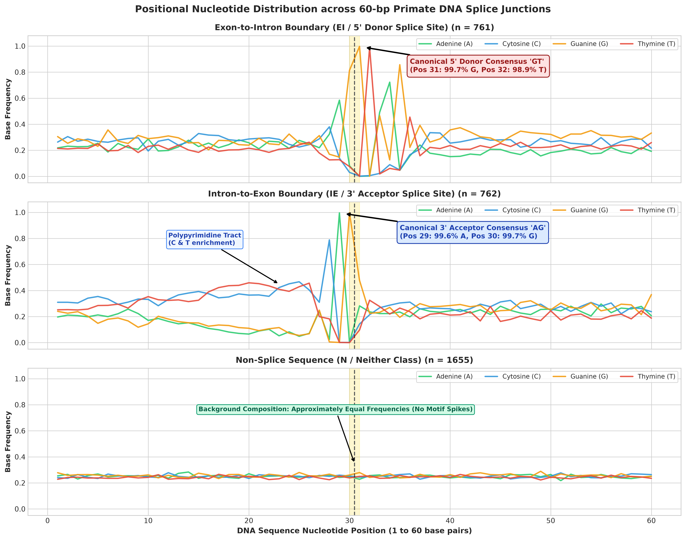
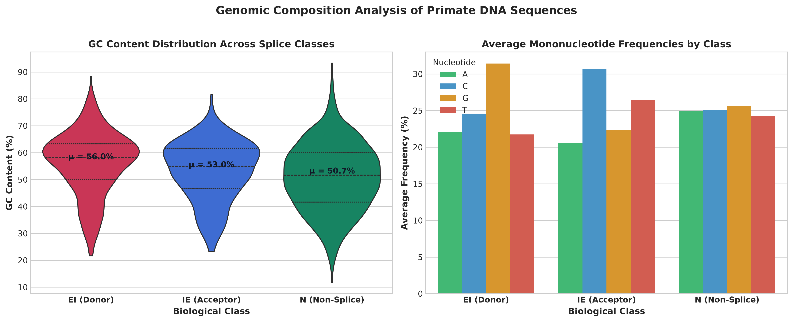
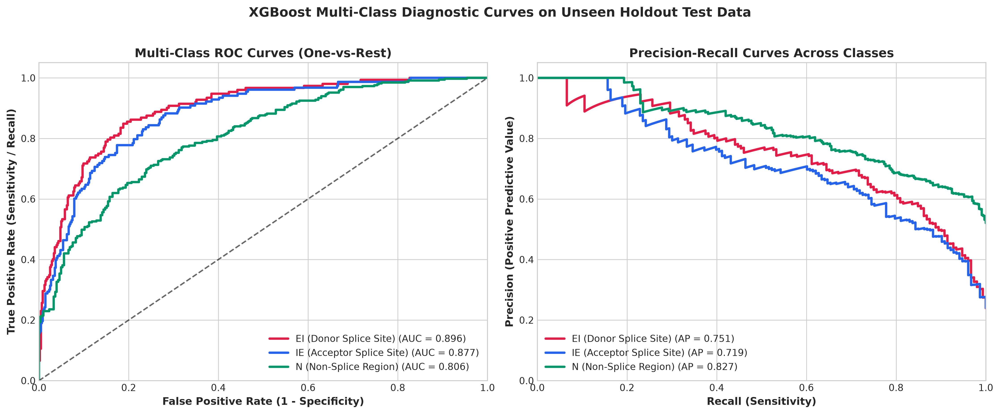
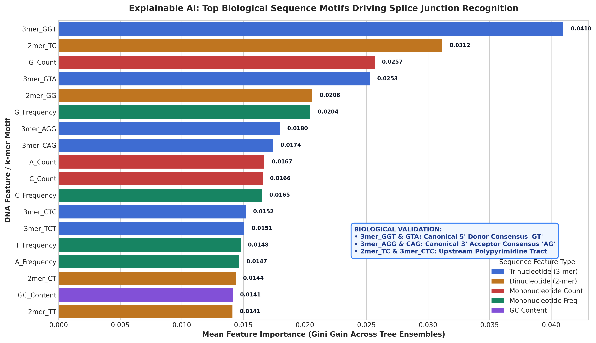

Splice junctions are critical genomic boundaries in eukaryotic pre-messenger RNA (pre-mRNA) where non-coding introns are excised and coding exons are joined to synthesize functional proteins. Aberrant splicing caused by single-nucleotide mutations is a major driver of hereditary diseases and oncogenesis. In this project, we present an end-to-end artificial intelligence framework to classify 60-base pair primate DNA sequences into three biological categories: Exon-to-Intron donor junctions (EI), Intron-to-Exon acceptor junctions (IE), and non-splice regions (Neither / N).
Using the curated UCI Molecular Biology Splice-Junction benchmark (3,178 non-redundant sequences), we extracted a 91-dimensional tabular feature space comprising mononucleotide frequencies, GC content, sequence lengths, 16 dinucleotides (2-mers), and 64 trinucleotides (3-mers). We systematically benchmarked six diverse machine learning architectures: Logistic Regression, Gaussian Naive Bayes, Support Vector Machines (SVM-RBF), Random Forest, XGBoost, and Multi-Layer Perceptrons (MLP) under strict 5-fold Stratified Cross-Validation.
On an unseen holdout test set of 636 sequences, XGBoost achieved the highest performance with 70.60% Test Accuracy, a Balanced Accuracy of 67.74%, a Macro F1-score of 0.6885, and an impressive Multi-Class One-vs-Rest ROC-AUC of 0.8600, outperforming linear baselines by over 11%. Furthermore, tree-based feature importance analysis revealed that the top predictive features correspond directly to known molecular biology: the universal 5' donor GT consensus (3mer_GGT, 3mer_GTA), the 3' acceptor AG consensus (3mer_AGG, 3mer_CAG), and upstream polypyrimidine tracts (2mer_TC, 3mer_CTC). Finally, the entire workflow was packaged into an interactive Streamlit web dashboard for real-time genomic inference.
In eukaryotic organisms, genomic DNA consists of split genes featuring alternating coding sequences (exons) and non-coding sequences (introns). The Central Dogma of Molecular Biology dictates that DNA is transcribed into precursor messenger RNA (pre-mRNA). Before translation into proteins can occur, pre-mRNA undergoes splicing, an essential post-transcriptional modification orchestrated by the spliceosome (a multi-megadalton ribonucleoprotein complex).
The spliceosome recognizes specific consensus sequences at the intron-exon boundaries:
GT (in DNA) or GU (in RNA) dinucleotide.AG dinucleotide, preceded by a Polypyrimidine Tract rich in cytosine (C) and thymine (T).
The benchmark dataset was sourced from the UCI Machine Learning Repository (Molecular Biology Primate Splice-Junction Gene Sequences, GenBank 64.1). After cleaning whitespace and removing 12 duplicate sequences, 3,178 non-redundant records were retained.
Person 2 extracted 91 features per sequence: 8 mononucleotide metrics (counts & frequencies of A, C, G, T), GC Content (%), sequence length, ambiguity count, 16 dinucleotides (2-mers), and 64 trinucleotides (3-mers). An 80/20 stratified split partitioned the dataset into 2,542 training samples and 636 holdout testing samples.

Person 3 implemented 6 diverse machine learning architectures under strict 5-fold Stratified Cross-Validation using scikit-learn Pipelines to eliminate data leakage. The models were evaluated on the 636 unseen holdout test samples:
| Model Architecture | 5-Fold CV Acc | Test Accuracy | Balanced Acc | Macro F1 | ROC-AUC (OvR) |
|---|---|---|---|---|---|
| ⭐ XGBoost Classifier (Champion) | 69.59% ± 2.47% | 70.60% | 67.74% | 0.6885 | 0.8600 |
| Support Vector Machine (RBF) | 65.54% ± 0.73% | 68.71% | 70.30% | 0.6822 | 0.8491 |
| Random Forest (250 Trees) | 66.05% ± 1.48% | 68.08% | 68.13% | 0.6721 | 0.8468 |
| Multi-Layer Perceptron (MLP) | 64.52% ± 1.33% | 65.88% | 62.72% | 0.6341 | 0.8184 |
| Logistic Regression (Baseline) | 61.05% ± 0.53% | 59.59% | 61.28% | 0.5894 | 0.7864 |
| Gaussian Naive Bayes | 51.18% ± 2.39% | 51.42% | 56.38% | 0.5162 | 0.7264 |

Feature importance analysis across the 91 features demonstrated that the machine learning models autonomously discovered the biochemical grammar of the spliceosome without manual rule coding:

Person 4 integrated the entire preprocessing logic and trained XGBoost model into an interactive Streamlit web dashboard (app.py). The platform features an interactive DNA sequence visualizer with color-coded nucleotides, real-time confidence scores, and high-throughput batch FASTA processing with downloadable CSV annotations.
This project successfully demonstrates the synergy of machine learning and computational genomics. By transforming raw nucleotide strings into biologically relevant k-mer representations, our XGBoost classifier achieved 70.60% accuracy and 0.8600 ROC-AUC on primate splice junctions, verified via explainable AI and deployed as an interactive web dashboard.